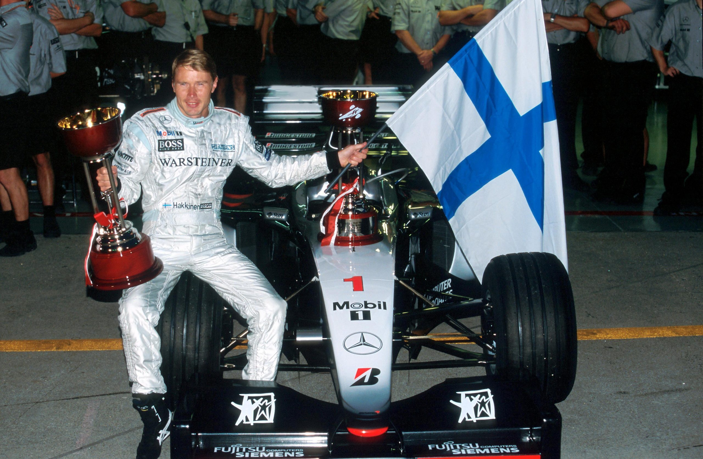
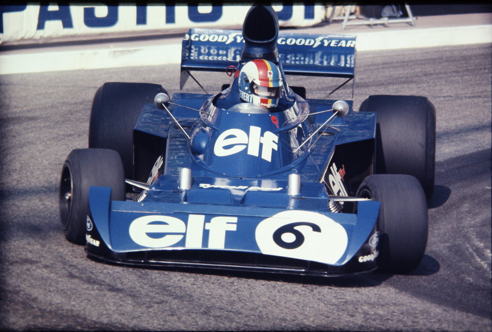

📚 Vuoi approfondire ogni stagione nel dettaglio? Esplora la nuova Libreria delle Stagioni Passate (2006-2026) con reportage completi, statistiche, classifiche e video highlights.
10. IL MONDIALE 2010, UN FINALE INDIMENTICABILE AD ABU DHABI
La stagione 2010 è stata caratterizzata da un equilibrio mai visto prima. Quattro squadre (Red Bull, Ferrari, McLaren e Mercedes) e ben cinque piloti si sono alternati nelle vittorie. La resa dei conti si è consumata ad Abu Dhabi: Fernando Alonso arrivava da leader della classifica, ma una scelta strategica errata del muretto Ferrari lo ha condannato a rimanere bloccato dietro la Renault di Vitaly Petrov. Sebastian Vettel, autore di una gara perfetta dalla pole position, ha conquistato la vittoria laureandosi a sorpresa il Campione del Mondo più giovane dell'epoca a 23 anni e 134 giorni.
→ Esplora la scheda completa della Stagione 2010
9. IL MONDIALE 2012: IL TRIONFO DI VETTEL SOTTO IL DILUVIO DI INTERLAGOS
Il campionato 2012 è considerato tra i più memorabili della storia con sette vincitori diversi nelle prime sette gare. La sfida iridata tra Sebastian Vettel su Red Bull e Fernando Alonso su Ferrari ha toccato l'apice nel diluvio di San Paolo: finito in testacoda e ultimo con la vettura danneggiata al via, Vettel ha rimontato in modo disperato fino al sesto posto, difendendo il titolo mondiale per appena tre punti di vantaggio sullo spagnolo.
→ Esplora la scheda completa della Stagione 2012
8. IL MONDIALE 2008: HAMILTON CAMPIONE ALL'ULTIMA CURVA
Il GP del Brasile 2008 ha regalato il finale più palpitante di sempre. Felipe Massa taglia il traguardo per primo e per trenta secondi è Campione del Mondo virtuale con il box Ferrari in festa. Ma la pioggia caduta all'ultimo giro mette in crisi la Toyota di Timo Glock su gomme slick: Lewis Hamilton lo supera all'ingresso dell'ultima curva Junção, strappando il 5° posto che gli vale il primo mondiale con un solo punto di scarto.
→ Esplora la scheda completa della Stagione 2008
7. IL MONDIALE 2021: IL DUELLO DEL SECOLO AD ABU DHABI
Dopo ventuno gare di feroce contesa ruota a ruota, incidenti memorabili e colpi di scena, Max Verstappen e Lewis Hamilton si presentano alla finale di Yas Marina a pari punti esatti (369.5 a 369.5). La safety car per l'incidente di Latifi negli ultimi giri offre a Verstappen l'opportunità di montare gomme soft e superare Hamilton all'ultimo giro alla curva 5 in una delle conclusioni più drammatiche e discusse nella storia dello sport mondiale.
→ Esplora la scheda completa della Stagione 2021
6. IL MONDIALE 2007: IL MIRACOLO DI KIMI RÄIKKÖNEN IN FERRARI

Alla vigilia dell'ultima gara in Brasile, Kimi Räikkönen ha 7 punti di ritardo dal leader Lewis Hamilton e 3 da Fernando Alonso. Approfittando dei dissidi interni in casa McLaren e del problema al cambio di Hamilton al via, il finlandese vince la corsa davanti a Felipe Massa e beffa entrambi i rivali della McLaren conquistando il mondiale piloti per un solo punto (110 contro i 109 di Hamilton e Alonso).
→ Esplora la scheda completa della Stagione 2007
5. IL MONDIALE 1999: MIKA HÄKKINEN CONTRO EDDIE IRVINE

Dopo il gravissimo incidente a Silverstone che ha fratturato la gamba a Michael Schumacher escludendolo dai giochi, la Ferrari ha affidato le sue speranze al nordirlandese Eddie Irvine. La lotta serratissima contro la McLaren di Mika Häkkinen si è protratta fino alla gara finale di Suzuka, dove il pilota finlandese ha dominato dalla partenza laureandosi per la seconda volta consecutiva Campione del Mondo.
4. IL MONDIALE 1986: ALAIN PROST CONTRO LE WILLIAMS
Una spettacolare sfida a tre tra Nigel Mansell, Nelson Piquet su Williams-Honda e Alain Prost su McLaren-TAG Porsche. Alla gara decisiva di Adelaide in Australia, l'esplosione della gomma posteriore sinistra di Mansell sul lungo rettilineo e il pit stop cautelativo di Piquet permettono a Prost di tagliare il traguardo e bissare il titolo iridato in modo memorabile.
3. IL MONDIALE 1976: IL DUELLO LEGGENDARIO LAUDA VS HUNT

La rivalità più celebre della storia tra Niki Lauda e James Hunt. Dopo il terribile rogo del Nürburgring da cui Lauda è scampato miracolosamente tornando al volante dopo sole sei settimane, il mondiale si è deciso sotto il diluvio del Fuji. Lauda, considerando la pista impraticabile per la sicurezza, si ritira volontariamente; Hunt conquista il 3° posto e vince il titolo per un singolo punto.
2. IL MONDIALE 1973: L'ULTIMO SIGILLO DI SIR JACKIE STEWART

Una sfida tecnica e umana intensissima tra la Tyrrell di Jackie Stewart e la Lotus di Emerson Fittipaldi e Ronnie Peterson. Stewart fa valere la sua straordinaria esperienza e vince il suo 3° alloro mondiale, segnato però dalla tragedia di Watkins Glen in cui perde la vita il suo compagno e allievo prediletto François Cevert.
1. IL MONDIALE 2024/2025: IL RITORNO DELLA PARITÀ E IL TITOLO A NORRIS

L'era moderna ha offerto due campionati al cardiopalma: il 2024 con sette vincitori diversi e il trionfo costruttori McLaren, seguito dal 2025 con la contesa a tre decisa ad Abu Dhabi con Norris che ha superato Verstappen per soli due punti dopo un'annata ad altissima intensità agonistica.